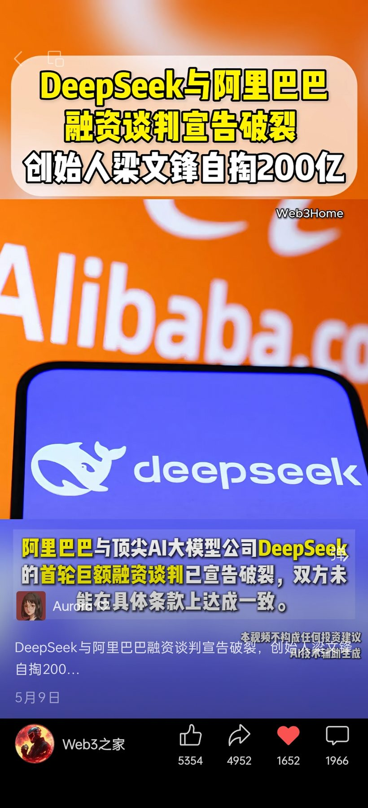
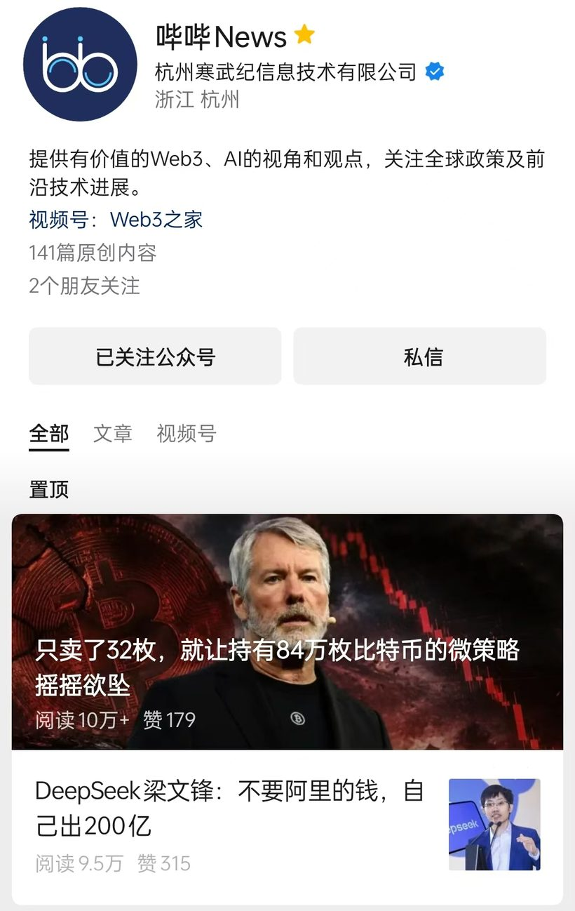

DeepSeek × 阿里：同一热点的多平台表达


01
信息 · 发生了什么
阿里与 DeepSeek 被曝进行融资谈判，传闻金额达 200 亿；随后谈判未果，创始人梁文锋计划出资 200 亿。
02
判断 · 为什么值得做
热点 + 数字反差
DeepSeek 本身是大热点，"200 亿"的数字反差进一步放大了注意力。
03
内容 · 如何适配不同平台
视频号
提取"200 亿 + 融资未果"的数字反差→
设计标题→
压缩 3 句核心内容→
视频呈现
公众号
事件切入→
以梁文锋的发展轨迹串联融资逻辑→
延展至商业化与 AI 行业趋势→
组织全文，让读者看懂这轮融资意味着什么
视频号
5,354
转发
4,952
点赞
1,966
评论
公众号
954
转发
315
点赞
98
评论